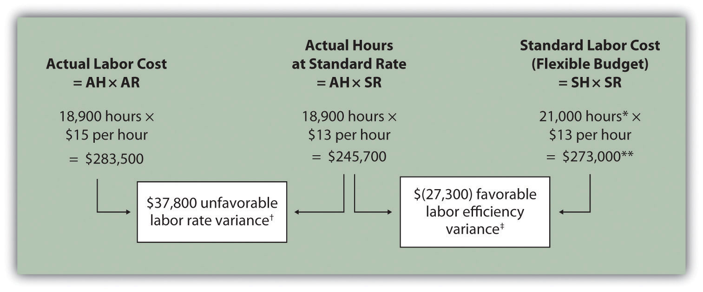
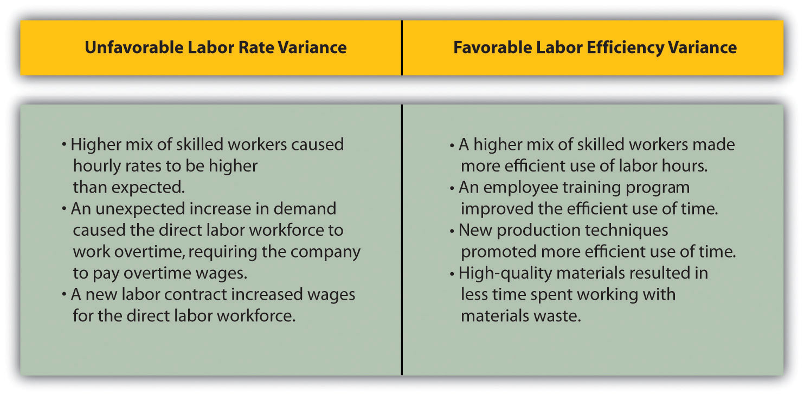

Question: In addition to investigating the causes of cost overruns for direct materials, the president of Jerry’s Ice Cream wants to know why there were cost overruns for direct labor. What variances are used to analyze these types of direct labor cost overruns?
Answer: Similar to direct materials variances, direct labor variance analysis involves two separate variances: the labor rate variance and labor efficiency variance. The labor rate varianceThe difference between actual costs for direct labor and budgeted costs based on the standards. is the difference between actual costs for direct labor and budgeted costs based on the standards. The labor efficiency varianceThe difference between the actual number of direct labor hours worked and budgeted direct labor hours that should have been worked based on the standards. is the difference between the actual number of direct labor hours worked and budgeted direct labor hours that should have been worked based on the standards.
At Jerry’s Ice Cream, the actual data for the year are as follows:
| Sales volume | 210,000 units |
| Direct labor hours worked | 18,900 hours |
| Cost of direct labor | $15 per hour |
Recall from Figure 10.1 "Standard Costs at Jerry’s Ice Cream" that the standard rate for Jerry’s is $13 per direct labor hour and the standard direct labor hours is 0.10 per unit. Figure 10.6 "Direct Labor Variance Analysis for Jerry’s Ice Cream" shows how to calculate the labor rate and efficiency variances given the actual results and standards information. Review this figure carefully before moving on to the next section where these calculations are explained in detail.
Figure 10.6 Direct Labor Variance Analysis for Jerry’s Ice Cream
Note: AH = Actual hours of direct labor. AR = Actual rate incurred for direct labor. SR = Standard rate for direct labor. SH = Standard hours of direct labor for actual level of activity.
*Standard hours of 21,000 = Standard of 0.10 hours per unit × 210,000 actual units produced and sold.
**$273,000 standard direct labor cost matches the flexible budget presented in Figure 10.2 "Flexible Budget for Variable Production Costs at Jerry’s Ice Cream".
† $37,800 unfavorable labor rate variance = $283,500 – $245,700. Variance is unfavorable because the actual rate of $15 is higher than the expected (budgeted) rate of $13.
‡ $(27,300) favorable labor efficiency variance = $245,700 – $273,000. Variance is favorable because the actual hours of 18,900 are lower than the expected (budgeted) hours of 21,000.
Question: The direct labor rate variance answers the question, did we spend more or less on direct labor than expected? If the variance is unfavorable, we spent more than expected. If the variance is favorable, we spent less than expected. How is the labor rate variance calculated?
Answer: As shown in Figure 10.6 "Direct Labor Variance Analysis for Jerry’s Ice Cream", the labor rate variance is the difference between the actual hours worked at the actual rate and the actual hours worked at the standard rate:
Alternative Calculation. Because we are holding the actual hours constant and evaluating the difference between actual rate and standard rate, the labor rate variance calculation can be simplified as follows:
Note that both approaches—direct labor rate variance calculation and the alternative calculation—yield the same result.
As with direct materials variances, all positive variances are unfavorable, and all negative variances are favorable. The labor rate variance calculation presented previously shows the actual rate paid for labor was $15 per hour and the standard rate was $13. This results in an unfavorable variance since the actual rate was higher than the expected (budgeted) rate.
Question: The direct labor efficiency variance answers the question, did we use more or less direct labor hours in production than expected? If the variance is unfavorable, we used more than expected. If the variance is favorable, we used less than expected. How is the labor efficiency variance calculated?
Answer: As shown in Figure 10.6 "Direct Labor Variance Analysis for Jerry’s Ice Cream", the labor efficiency variance is the difference between the actual hours worked at the standard rate and the standard hours at the standard rate:
The 21,000 standard hours are the hours allowed given actual production. For Jerry’s Ice Cream, the standard allows for 0.10 labor hours per unit of production. Thus the 21,000 standard hours (SH) is 0.10 hours per unit × 210,000 units produced.
Alternative Calculation. Because we are holding the standard rate constant and evaluating the difference between actual hours worked and standard hours, the labor efficiency variance calculation can be simplified as follows:
Note that both approaches—the direct labor efficiency variance calculation and the alternative calculation—yield the same result.
The labor efficiency variance calculation presented previously shows that 18,900 in actual hours worked is lower than the 21,000 budgeted hours. Clearly, this is favorable since the actual hours worked was lower than the expected (budgeted) hours.
Question: The managerial accountant at Jerry’s Ice Cream is interested in finding the cause of the unfavorable labor rate variance of $37,800. Jerry’s Ice Cream might also choose to investigate the $27,300 favorable labor efficiency variance. Although this could be viewed as good news for the company, management may want to know why this favorable variance occurred. What might have caused the $37,800 unfavorable labor rate variance and $27,300 favorable labor efficiency variance?
Answer: Figure 10.7 "Possible Causes of Direct Labor Variances for Jerry’s Ice Cream" contains some possible explanations for the labor rate variance (left panel) and labor efficiency variance (right panel).
Figure 10.7 Possible Causes of Direct Labor Variances for Jerry’s Ice Cream
As mentioned earlier, the cause of one variance might influence another variance. For example, many of the explanations shown in Figure 10.7 "Possible Causes of Direct Labor Variances for Jerry’s Ice Cream" might also apply to the favorable materials quantity variance.
We have demonstrated how important it is for managers to be aware not only of the cost of labor, but also of the differences between budgeted labor costs and actual labor costs. This awareness helps managers make decisions that protect the financial health of their companies.
Labor Costs in the Airline Industry
United Airlines asked a bankruptcy court to allow a one-time 4 percent pay cut for pilots, flight attendants, mechanics, flight controllers, and ticket agents. The pay cut was proposed to last as long as the company remained in bankruptcy and was expected to provide savings of approximately $620,000,000. How would this unforeseen pay cut affect United’s direct labor rate variance? The direct labor rate variance would likely be favorable, perhaps totaling close to $620,000,000, depending on how much of these savings management anticipated when the budget was first established.
After filing for Chapter 11 bankruptcy in December 2002, United cut close to $5,000,000,000 in annual expenditures. As a result of these cost cuts, United was able to emerge from bankruptcy in 2006.
Source: Associated Press, “United May Seek End to Union Contracts,” USA Today, November 25, 2004.
Jerry (president and owner), Tom (sales manager), Lynn (production manager), and Michelle (treasurer and controller) were at the meeting described at the opening of this chapter. Michelle was asked to find out why direct labor and direct materials costs were higher than budgeted, even after factoring in the 5 percent increase in sales over the initial budget. Lynn was surprised to learn that direct labor and direct materials costs were so high, particularly since actual materials used and actual direct labor hours worked were below budget.
The group met again a week later to discuss the issue.
| Jerry: | Michelle, what do you have for us? |
| Michelle: | My staff has been working hard to identify why direct materials and direct labor costs were higher than expected. First, I would like to confirm that these costs were indeed higher than anticipated. |
| Lynn: | I still don’t see how this can be. My production crew was as efficient with their time and materials as they’ve ever been. |
| Michelle: | You’re right, Lynn. Our variance analysis shows a favorable direct materials quantity variance, which relates directly to the amount of materials used, and a favorable direct labor efficiency variance, which relates directly to the efficiency of our production workers. Both variances are good news. |
| Jerry: | Then why are our direct labor and direct materials costs so high? |
| Michelle: | The answer relates directly to the price we paid for materials, and the hourly rates we paid for labor. Both were higher than expected. We expected to pay $1 per pound for direct materials, but actually paid $1.20 per pound. In addition, we expected to pay $13 an hour for direct labor when in fact we actually paid $15 an hour. This means we paid 20 percent more than expected for direct materials, which is $0.20 divided by $1, and 15 percent more than expected for direct labor, which is $2 divided by $13. |
| Lynn: | I do recall Tony over in purchasing telling me he obtained some premium materials for our ice cream, and I know we hired some relatively experienced workers who were paid a bit more than the normal starting rate. |
| Tom: | This might explain why our customers were thrilled about our product. The materials were high quality and the production workers really knew their stuff! |
| Jerry: | While I like the end result of a higher-quality product and increased sales, we must do a better job of controlling costs. Perhaps Tony can negotiate a better price for materials. I don’t mind paying our employees a higher wage based on their experience, but let’s make sure we get some efficiency savings in the process to help offset the higher wages. Michelle, can we continue to monitor material and labor costs? |
| Michelle: | Yes. I’ll have my staff analyze material and labor variances monthly, and I’ll have a report ready at the end of each month for you and Lynn. |
| Jerry: | Excellent! Lynn, let our production crew know they are doing a fine job, and continue to encourage them to find ways to improve the efficiency of production. I’ll talk with Tony about the possibility of getting a better deal on materials. |
As stated earlier, variance analysis is the control phase of budgeting. Using variance analysis for direct materials and direct labor, Jerry’s Ice Cream was able to identify strong points in its operations (quantity of materials used and efficiency of direct labor workforce), and perhaps more important, Jerry’s was able to identify problem areas (price paid for materials and wages paid to employees). This information gives the management a way to monitor and control production costs. Next, we calculate and analyze variable manufacturing overhead cost variances.
Carol’s Cookies expected to use 0.20 direct labor hours to produce 1 unit (batch) of product at a cost of $12 per hour. Actual results are in for last year, which indicates 390,000 batches of cookies were sold. The company’s direct labor workforce worked 97,500 hours at $11 per hour.
Solution to Review Problem 10.4
As shown in the following, the labor rate variance is $(97,500) favorable, and the labor efficiency variance is $234,000 unfavorable.
Note: AH = Actual hours of direct labor. AR = Actual rate incurred for direct labor. SR = Standard rate for direct labor. SH = Standard hours of direct labor for actual level of activity.
*Standard hours of 78,000 = Standard of 0.20 hours per unit × 390,000 actual units produced and sold.
**$936,000 standard direct labor cost matches the flexible budget presented in Note 10.18 "Review Problem 10.2", part 2.
† $(97,500) favorable labor rate variance = $1,072,500 – $1,170,000. Variance is favorable because the actual rate of $11 is lower than the expected (budgeted) rate of $12.
‡ $234,000 unfavorable labor efficiency variance = $1,170,000 – $936,000. Variance is unfavorable because the actual hours of 97,500 are higher than the expected (budgeted) hours of 78,000.
The following are alternative direct labor variance calculations:
Possible causes of favorable labor rate variance are
Possible causes of unfavorable labor efficiency variance are